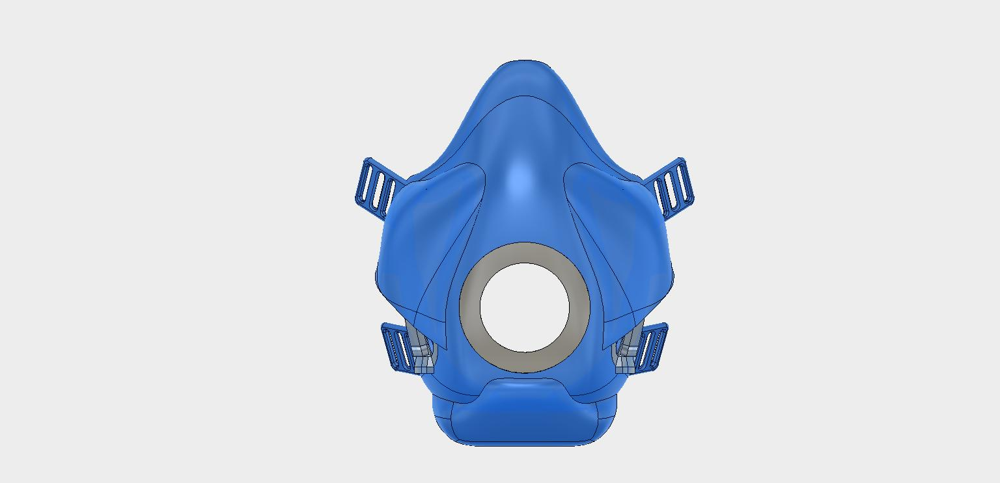

Overview
Awarded "College of Engineering 2018 Best Senior Design Concept."
Personnel and workers deployed in desert environments often suffer from chronic respiratory illnesses due to constant inhalation of sand. Most masks either deteriorate in abrasive sandstorms or are over-designed to filter out gas and fine particles.
This project aimed to develop a low-cost, reusable mask designed to only filter out large particulates such as sand.
Design
Integrated stainless steel meshes and one-way valves into flexible plastic mask.
Iterated through 6 design prototypes. Evaluated masks effect on athletic performance in collaboration with the ROTC and Rowing Team.
Simulated the mask's airflow and filtration efficiency using computational fluid dynamics (CFD) in ANSYS's Fluent.
